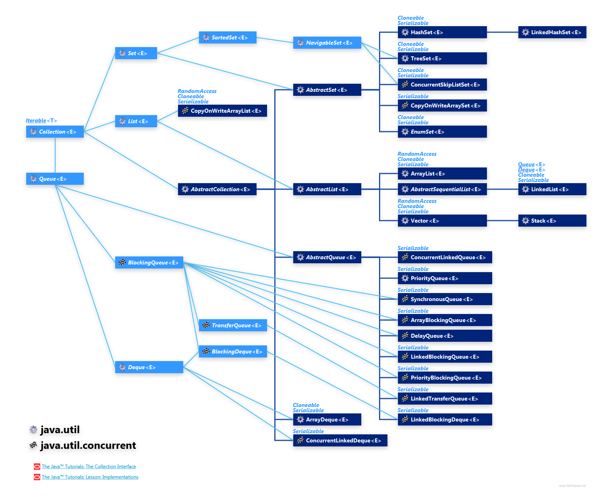

Java Collections Framework
UML 图
overview-of-java-collections-framework-api-uml-diagram

队列的六个操作
add(E e)
Inserts the specified element at the tail of this queue if it is possible to do so immediately without exceeding the queue’s capacity, returning true upon success and throwing an IllegalStateException if this queue is full.
offer(E e)
Inserts the specified element at the tail of this queue if it is possible to do so immediately without exceeding the queue’s capacity, returning true upon success and false if this queue is full.
put(E e)
Inserts the specified element at the tail of this queue, waiting for space to become available if the queue is full.
peek()
Retrieves, but does not remove, the head of this queue, or returns null if this queue is empty.
poll()
Retrieves and removes the head of this queue, or returns null if this queue is empty.
take()
Retrieves and removes the head of this queue, waiting if necessary until an element becomes available.
平时最常用的 put 和 take 是阻塞操作。
非阻塞操作可以加一套限时参数变成部分阻塞操作。
Code Examples
CopyOnWriteArrayList
CopyOnWriteArrayList的读操作有最终一致性问题：
由于所有的写操作都是在新数组进行的，这个时候如果有线程并发的写，则通过锁来控制，如果有线程并发的读，则分几种情况：
1、如果写操作未完成，那么直接读取原数组的数据；
2、如果写操作完成，但是引用还未指向新数组，那么也是读取原数组数据；
3、如果写操作完成，并且引用已经指向了新的数组，那么直接从新数组中读取数据。
普通的 list在迭代的时候用 list.remove 会失败，iterator.remove 在单线程下回成功。而 CopyOnWriteArrayList 实际上是在一个 immutable 的 snapshot 上进行迭代，所以连 iterator.remove 都会 fastfail。
它是 ArrayList 的一个并发替代品，通过读写分离提高性能，但一致性问题和复制问题是一个潜在的性能和业务问题。
EnumSet
enumset 的限制：
- It can contain only enum values and all the values have to belong to the same enum
- It doesn’t allow to add null values, throwing a NullPointerException in an attempt to do so
- It’s not thread-safe, so we need to synchronize it externally if required
- The elements are stored following the order in which they are declared in the enum
- It uses a fail-safe iterator that works on a copy, so it won’t throw a ConcurrentModificationException if the collection is modified when iterating over it - fail-safe 意味着不是 immutable 的，而且可能被并发修改。
JDK 提供两个默认参考实现：
- RegularEnumSet
- JumboEnumSet
1 | |
EnumMap
1 | |
Using Enum as key makes it possible to do some extra performance optimization, like a quicker hash computation since all possible keys are known in advance.
因为枚举的顺序已经被事先知道了，所以可以进行某些极致的优化。
EnumMap is an ordered map, in that its views will iterate in enum order.
EnumMap 是一个有序 map，但 LinkedHashMap 和 TreeMap 也可以提供类似的行为。
IdentityHashMap
IdentityHashMap 的用法和HashMap的用法差不多，他们之间最大的区别就是IdentityHashMap判断两个key是否相等，是通过严格相等即（key1==key2）来判读的，而HashMap是通过equals()方法和hashCode（）这两个方法来判断key是否相等的。
用途：
- 需要比对独一无二的的对象，如全局的 class，可以用 IdentityHashMap 来控制唯一性（注意这一点 Set 接口应该也做得到）。
- 深拷贝的时候需要容忍相同的值不同引用的对象。
Sorted 接口
since 1.2
SortedMap、SortedSet 都要求包含的元素实现了 Comparable 接口，这样它们可以被集合排序（当然只有迭代或者顺序查询的时候才能体现出这种顺序来），这被称为provides a total ordering on its keys。
这种 order 可能是 natural order，也可能是由创建集合时传入的 comparator 决定的，却绝不是 LinkedList 等数据结构保持的插入顺序。
Java 中提到 order，默认都是 ascending （类似于指定了 order by 的 MySQL）。
SortedMap
1 | |
非有序 map 也可以转成有序 map：
1 | |
- Range view — performs arbitrary range operations on the SortedMap
- subMap(K fromKey, K toKey): Returns a view of the portion of this Map whose keys range from fromKey, inclusive, to toKey, exclusive.
- headMap(K toKey): Returns a view of the portion of this Map whose keys are strictly less than toKey.
- tailMap(K fromKey): Returns a view of the portion of this Map whose keys are greater than or equal to fromKey.
- Endpoints — returns the first or the last key in the SortedMap
- firstKey(): Returns the first (lowest) key currently in this Map.
- lastKey(): Returns the last (highest) key currently in this Map.
- Comparator access — returns the Comparator, if any, used to sort the map
- comparator(): Returns the Comparator used to order the keys in this Map, or null if this Map uses the natural ordering of its keys.
SortedSet
近于 SortedMap，也能维护自己内部元素的顺序。
可以提供各种基于大小比对得到视图（View）的 API。
Navigable 接口
since 1.2
NavigableSet扩展了 SortedSet，具有了为给定搜索目标报告最接近匹配项的导航方法。方法 lower、floor、ceiling 和 higher 分别返回小于、小于等于、大于等于、大于给定元素的元素，如果不存在这样的元素，则返回 null。
类似地，方法 lowerKey、floorKey、ceilingKey 和 higherKey 只返回关联的键。所有这些方法是为查找条目而不是遍历条目而设计的。
可以按照键的升序或降序访问和遍历 NavigableMap。descendingMap 方法返回映射的一个视图，该视图表示的所有关系方法和方向方法都是逆向的。升序操作和视图的性能很可能比降序操作和视图的性能要好。subMap、headMap 和 tailMap 方法与名称相似的 SortedMap 方法的不同之处在于：可以接受用于描述是否包括（或不包括）下边界和上边界的附加参数。任何 NavigableMap 的 Submap 必须实现 NavigableMap 接口。
此外，此接口还定义了 firstEntry、pollFirstEntry、lastEntry 和 pollLastEntry 方法，它们返回和/或移除最小和最大的映射关系（如果存在），否则返回 null。
1 | |
AbstractList
它的迭代器是不可变的 ListIterator, 只有 hasNext()，hasPrevious()，next()， previous()， 还有几个获取位置的方法 - 没有增删改查的操作。
AbstractSequentialList
抽象线性表，就是数据结构里的线性表，是顺序表和链表的基类型，但在 Java 里只是 LinkedList。
它的迭代器在 ListIterator 基础上增加了，add、remove 等操作。